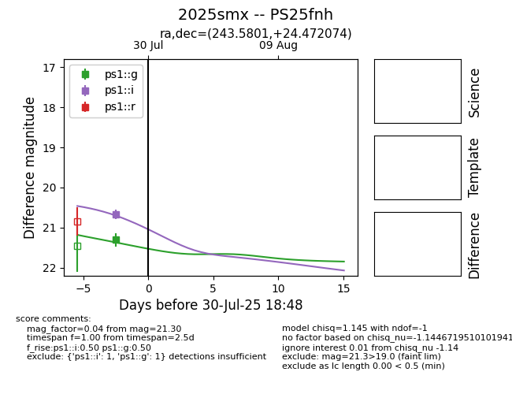

Target 2025smx at 2025-07-30 18:48, see:
TNS: wis-tns.org/object/2025smx
YSE: ziggy.ucolick.org/yse/transient_detail/2025smx
alt names
2025smx (yse,tns)
PS25fnh (panstarrs)
coordinates:
equatorial (ra, dec) = (243.5801,+24.47207)
galactic (l, b) = (41.4824,+44.56561)
photometry
last ps1::g=21.30, ps1::i=20.67
1 ps1::g, 1 ps1::i detections
